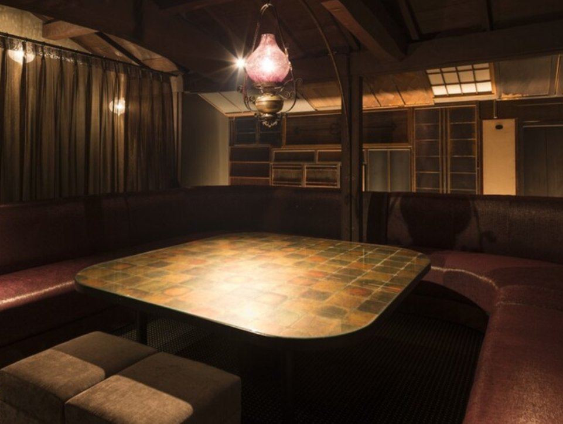
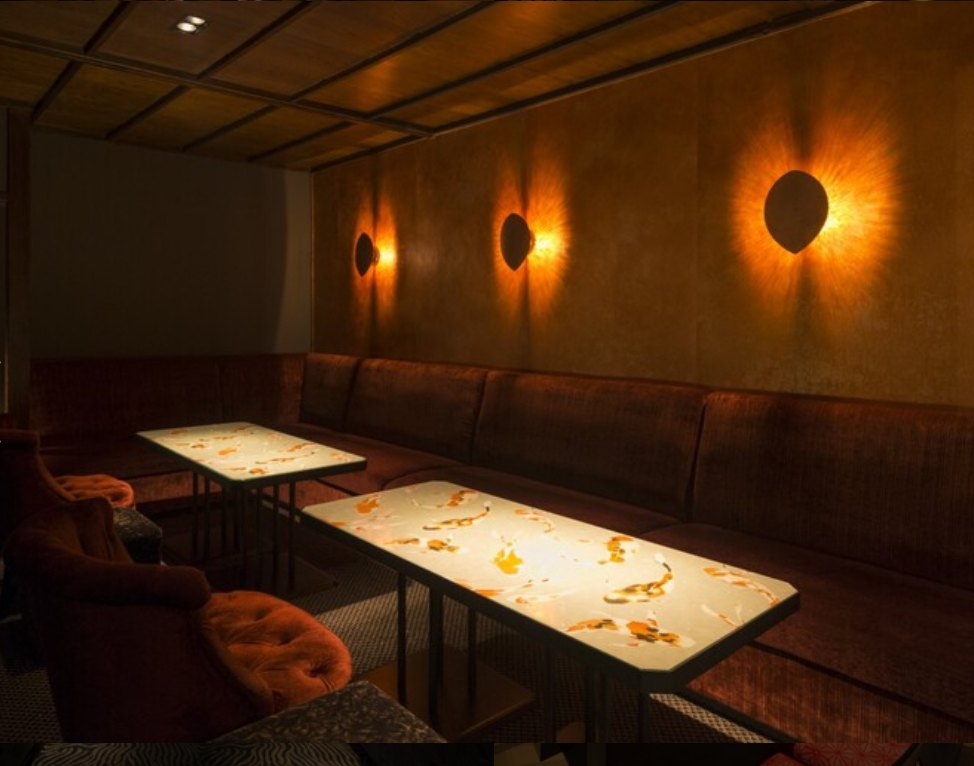
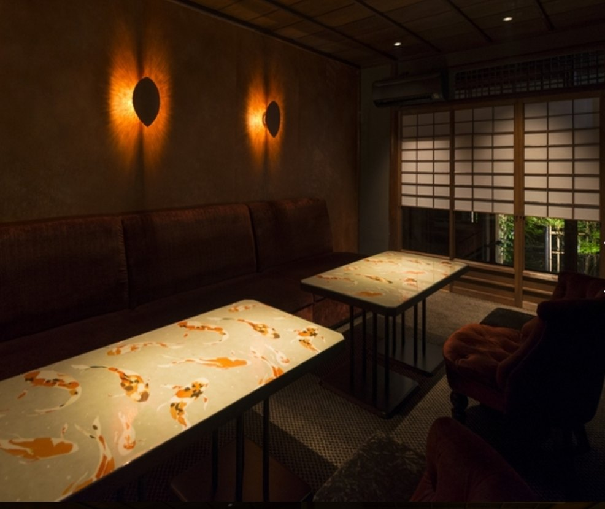

祇園で働くのは不安…そんな人ほど「華小町」を選んでほしい理由
Area 編集部

「祇園で働いてみたい。でも、敷居が高そう」「未経験の私が行って、浮かないかな」。
そう感じている人にこそ、知ってほしいお店があります。祇園の華小町（はなこまち）です。
はじめての人ほど「人が多いお店」を選んでほしい
夜のお仕事がはじめての人がつまずきやすいのは、お給料よりも「ひとりぼっちになること」です。まわりに同じ立場の子がいない、聞ける人がいない、お客様がつかない。そうなると、どんなに時給が高くても続きません。
だからAreaは、はじめての人には人が多くて、新人が毎日入ってくるお店をおすすめしています。華小町は、出勤人数も在籍している女性の数も祇園でトップクラス。毎日のように新人さんが入店しているお店です。
不安をなくす、華小町のしくみ
1. 売上がなくても、時給8,000円から
体験入店の日から時給8,000円〜。入ったばかりで指名がなくても、時給でしっかりお給料が出ます。経験のある人は、面談でさらに優遇されます。
2. 手ぶらで行ける
新作・ブランドのドレスを無料で借りられて、専属のヘアメイクもいます。「何を着ていけばいいの？」と悩まなくて大丈夫。履歴書もいりません。
3. 落ち着いたお客様が多い
大切な接待の場として選ばれるお店で、VIPのお客様が多め。騒がしい席が苦手な人でも、ゆっくり会話を楽しめます。
4. 自分のペースで働ける
週1日から、シフトは自己申告制。終電で上がれて、短期もOK。ノルマもありません。遠くから通う人には寮も、帰りの送りもあります。




華小町ってどんなお店？
築130年以上の京町家を、和洋折衷にリノベーションしたデザイナーズキャバクラ。地下1階〜地上3階の4フロアにテーブル33卓、個室が7部屋（うちVIPルーム2部屋）ある、祇園で最大級のお店です。京阪「祇園四条駅」から歩いて3分。カイザーグループの系列店です。
| 時給 | 8,000円〜（体験入店から同じ。経験者はさらに優遇） |
|---|---|
| 日払い | OK |
| 勤務 | 週1日〜・シフト自己申告・短期OK・終電上がりOK |
| 営業時間 | 19:00〜LAST（日曜定休） |
| 衣装・ヘアメイク | レンタルドレス無料・専属ヘアメイク在籍 |
| 待遇 | ノルマなし・寮あり・送りあり・個人ロッカー・履歴書不要 |
| 場所 | 京都市東山区富永町105（京阪「祇園四条駅」徒歩3分） |
18歳以上の方が対象です（高校生は応募できません）。
まずは、体験入店から
「自分に合うかどうか」は、行ってみないとわかりません。華小町は体験入店も大歓迎。1日働いてみて、雰囲気を確かめてから決めて大丈夫です。
- LINEか電話で「Areaを見た」と伝える
- 面接・体験入店の日を決める（顔写真付きの身分証明書を持っていく）
- お給料・シフトの説明を聞いて、手ぶらで体験入店へ
募集要項・応募はこちらにまとめています。
華小町の求人を見る※この記事は、お店から提供された情報と公開情報をもとにArea編集部がまとめたものです（2026年11月17日時点）。お給料・勤務条件は、面接のときに必ずお店へ確認してください。Areaは求人情報を掲載する広告媒体です。お仕事の紹介・あっせんは行っていません。